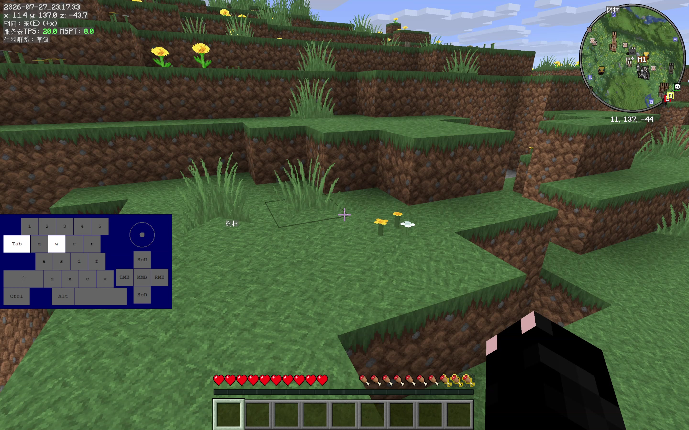
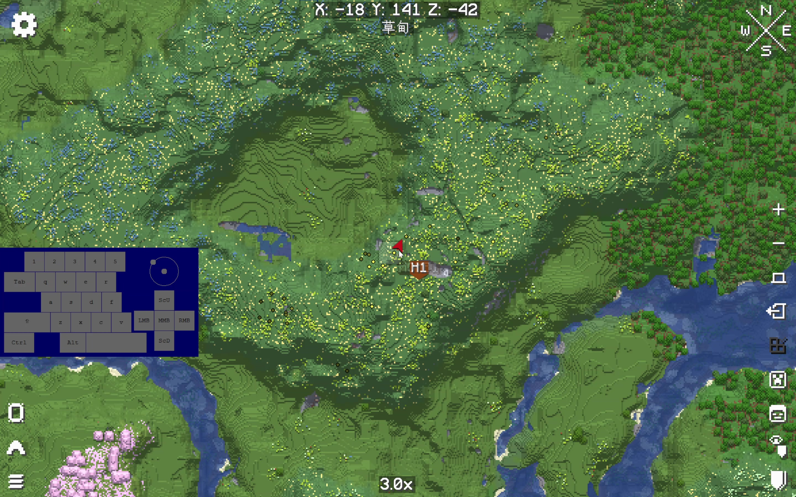
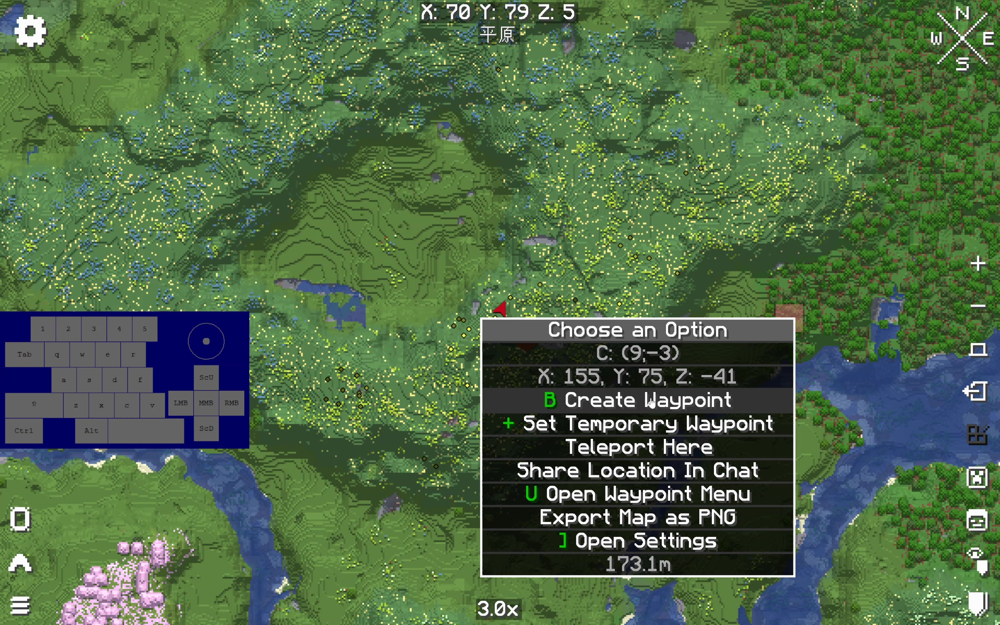
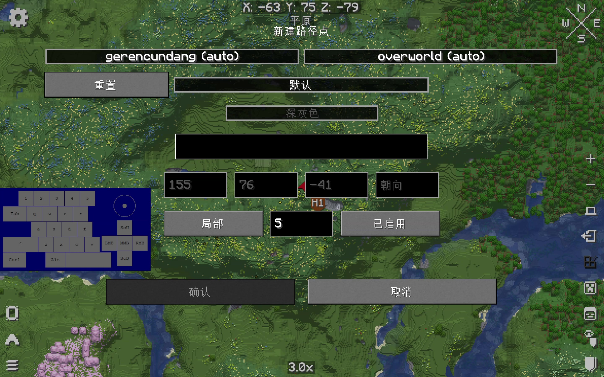
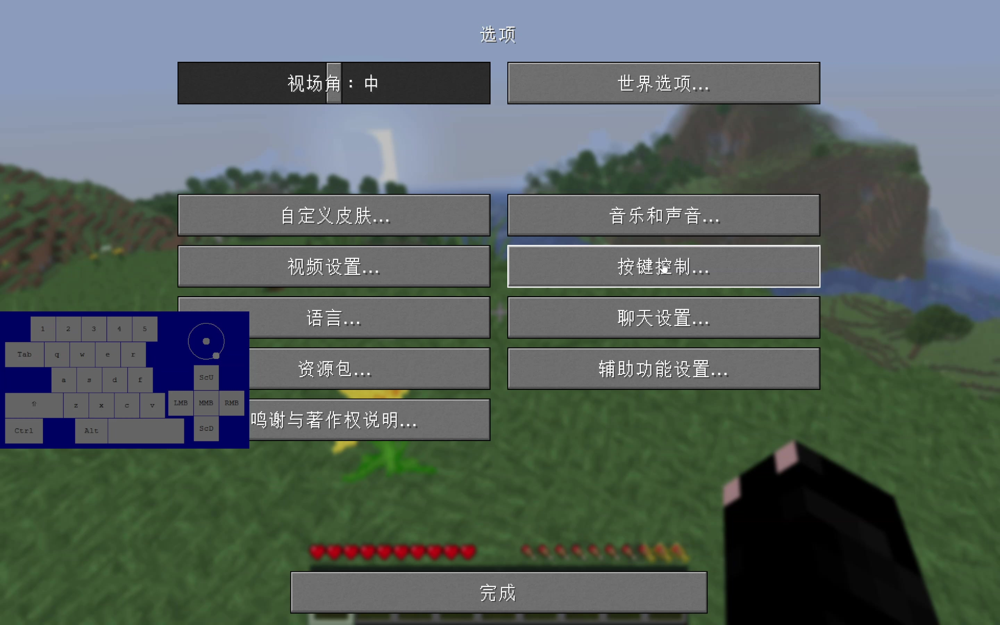

不用反复打开全屏地图。
生存探索 · 导航痛点装了地图，
装了地图，
还会迷路吗？
不是再画一张虚拟地图，而是直接看实机：Xaero 把“我在哪”和“我去过哪”拆成两种不同尺度的信息。
Minimap 26.4.0World Map 1.44.0实机录制

圆形小地图路径点 H1实机画面 · 本期录制Xaero's Minimap 26.4.0方向、地形、
看方向 看周边 看目标
方向、地形、
路径点都在 HUD
圆形小地图常驻右上角，实际移动时能看到方向、附近实体和目标地点。这里使用的是你的原始游戏画面。
地形与附近目标即时显示。
路径点距离与方位随移动更新。

实机世界地图 · 已探索区域键盘显示来自原始录制Xaero's World Map 1.44.0探索过的世界，
探索过的世界，
一整张图看清
全屏世界地图记录已经走过的地形。缩放后可以看区域、河流和路径点，远行前先确定方向，再回到游戏里执行。
探索记录全屏浏览缩放规划
路径点 · 同一组地点
从标记到导航，都在实机里完成
右键菜单创建路径点，再进入配置页调整细节。近处由小地图指路，远处由世界地图定位。

世界地图里直接选择创建、临时标记或传送等操作。

地点名称、坐标与显示方式，都以游戏内页面为准。
进入实机操作先确认按键，
先确认按键，
再开始探索
安装时核对 Minecraft、加载器和 MOD 版本；进入世界后，先检查小地图、世界地图和路径点相关按键是否冲突。
Minimap：HUD 小地图与方向World Map：探索记录与全屏浏览Waypoint：家、村庄、传送门等地点
实机操作段 · 原声完整保留
实机按键设置